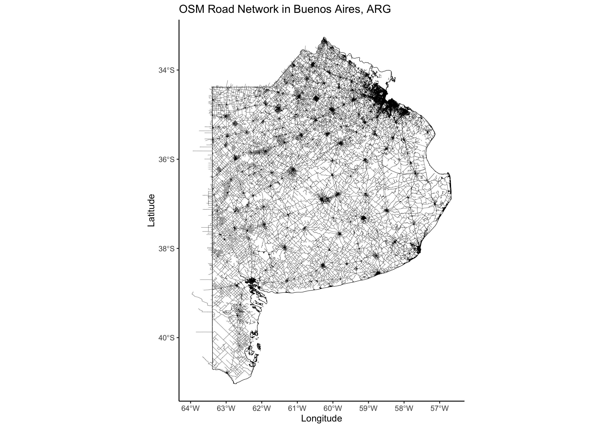
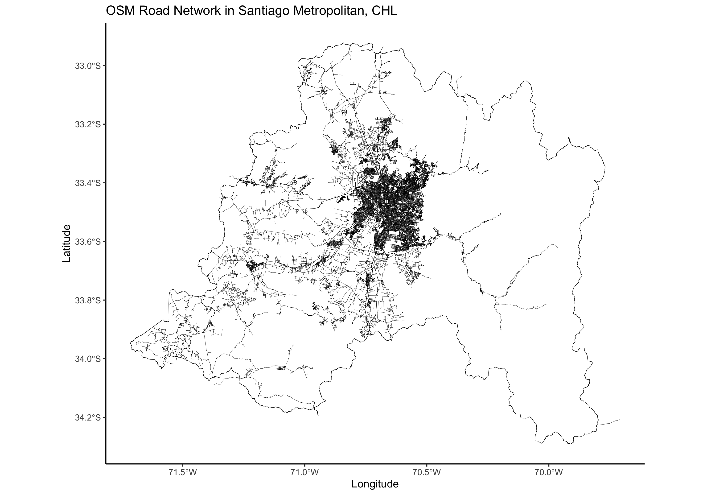
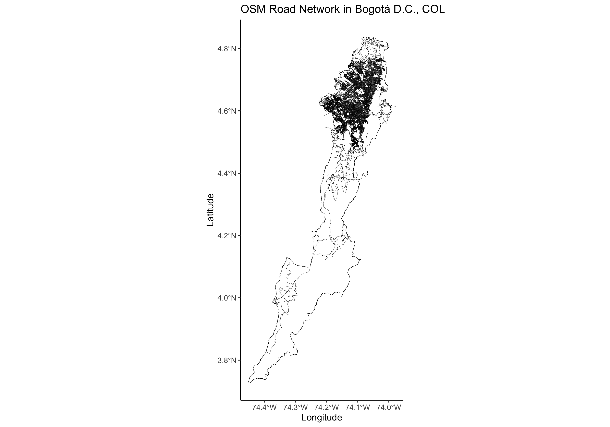
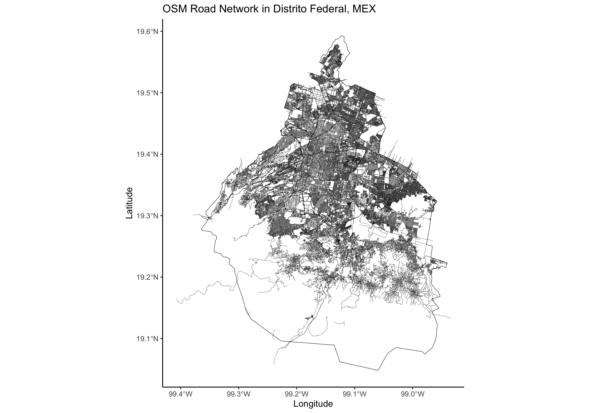
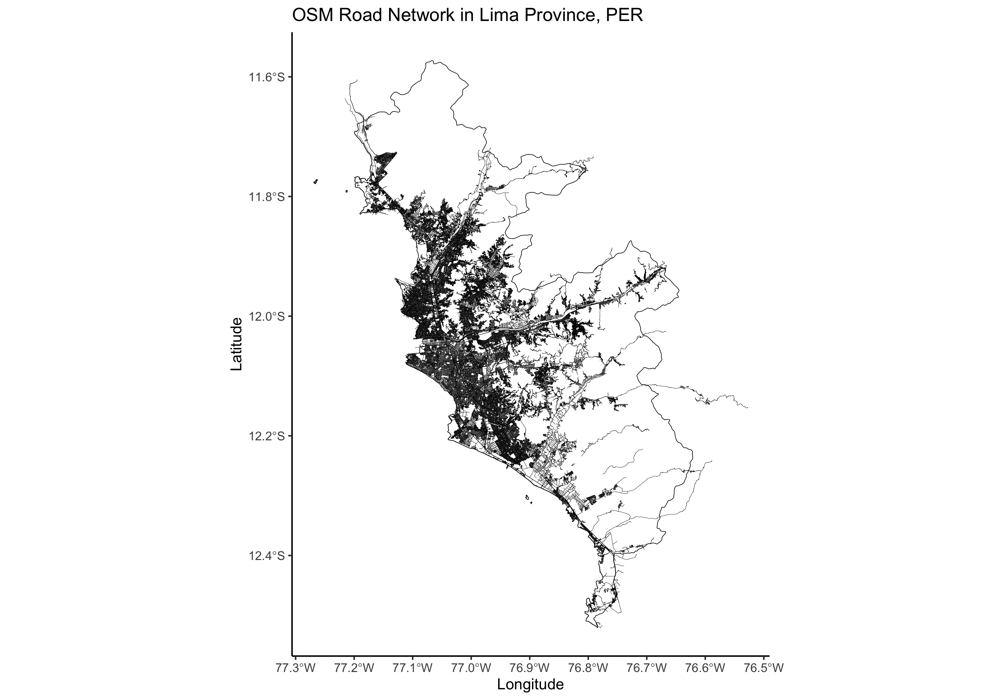

One of the most common data requests in geospatial data science is obtaining the road network within a given administrative boundary. This includes identifying road locations, classifying road types, and calculating the total road length within a region—an essential analysis for various applications.
OpenStreetMap (OSM) is widely recognized as the go-to source for road network data, thanks to its crowdsourced contributions that provide global coverage. To step outside my usual Python development, I decided to create an R function to extract OSM road network data for a given administrative boundary. This function generates a CSV containing the roads’ linestrings within the boundary and, if requested, also exports a PNG visualizing the results.
get_osm_highways <- function(country_iso3, level = 0, name_level1 = NULL, plot = FALSE) {
...
}
First, we need to install and load the necessary R libraries to support the data extraction and processing workflow:
install.packages(c("osmdata","geodata","sf","ggplot2","dplyr"))
library(osmdata)
library(geodata)
library(sf)
library(ggplot2)
library(dplyr)
The function begins by setting up the necessary output directories. It creates a csv folder to store the exported road linestring data and a png folder for saving plotted visualizations if requested.
dir.create("csv", showWarnings = FALSE)
dir.create("png", showWarnings = FALSE)
With the geodata package, we retrieve administrative boundary data from the Database of Global Administrative Areas (GADM) for our selected region. geodata provides functions for downloading geographic data, streamlining spatial analysis and mapping. It offers access to a wide range of datasets, including climate, land use, elevation, soil, species occurrence, accessibility, and administrative boundaries.
gadm_data <- gadm(country = country_iso3, level = level, path = "./data")
To ensure valid region selection, we implement a validation step. If the specified region does not exist, the function lists all available level 1 regions for the chosen country. Once a valid region is selected, it is filtered from the rest of the data. If no level 1 region is provided, the function defaults to using the entire country as the area of interest.
# Check if Level 1 name exists
if (!is.null(name_level1) && !(name_level1 %in% unique(gadm_data$name_1))) {
stop(paste("there is no", name_level1, "at level 1. available names are:\n",
paste(unique(gadm_data$name_1), collapse = ", ")))
}
# If level1 name is provided, filter the region
if (!is.null(name_level1)) {
region <- gadm_data[gadm_data$name_1 == name_level1, ]
} else {
region <- gadm_data # use whole country if no specific region is provided
}
To interact with the osmdata library, we first process our region data. We convert the filtered region into an sf object, a standardized format for encoding spatial vector data. Since osmdata requires a bounding box to filter raw OSM data, we then extract the region’s bounding box using the st_bbox() function.
# Convert region to sf object
region_sf <- st_as_sf(region)
# Get bounding box for OSM query
region_bbox <- st_bbox(region_sf)
With the bounding box defined, we use the osmdata package to retrieve features within our area of interest that contain the highway key and specific road types. For descriptions of these road categories, refer to the OSM Wiki. After extracting the road network as line features, we refine the results by filtering only the roads that intersect with the original administrative boundary, rather than the broader bounding box.
# Query OSM for highways within the bounding box
osm_data <- opq(bbox = region_bbox) %>%
add_osm_feature(key = "highway",
value = c("motorway", "motorway_link", "primary", "primary_link",
"residential", "secondary", "secondary_link",
"tertiary", "tertiary_link", "trunk", "trunk_link",
"unclassified")) %>%
osmdata_sf()
# Extract highway lines
osm_lines <- osm_data$osm_lines
# Filter only features that intersect with the selected region
osm_filtered <- osm_lines[st_intersects(osm_lines, region_sf, sparse = FALSE), ]
In the final step, we structure the dataset to include the road type, geometry in Well-Known Text (WKT) format, and segment length in meters. We achieve this using the mutate() and select() functions from the dplyr package, ensuring a clean and well-formatted output.
# Convert geometry to WKT and compute lengths
osm_filtered <- osm_filtered %>%
mutate(wkt_geometry = st_as_text(geometry),
length_m = st_length(geometry)) %>%
select(highway, wkt_geometry, length_m)
Finally, we export the output dataset as CSV, and export the PNG of the plot produced in ggplot2.
# Save to CSV
csv_filename <- paste0("csv/", country_iso3, "_highways.csv")
write.csv(osm_filtered, csv_filename, row.names = FALSE)
message("CSV saved to: ", csv_filename)
# Plot and save PNG if requested
if (plot) {
plot_filename <- paste0("png/", country_iso3, "_highways.png")
ggplot() +
geom_sf(data = region_sf, fill = NA, color = "black", size = 0.5) + # Region boundary
geom_sf(data = osm_filtered, color = "blue", size = 0.4) + # OSM highways
labs(title = paste("OSM Road Network in", country_iso3),
x = "Longitude", y = "Latitude") +
theme_minimal()
ggsave(filename = plot_filename, width = 10, height = 7)
message("Plot saved to: ", plot_filename)
}
You can find the complete script on my GitHub repo.
If you get an error that says Error: Overpass query unavailable without internet, just paste the next line at the beginning of the script:
assign("has_internet_via_proxy", TRUE, environment(curl::has_internet))
Captures
   